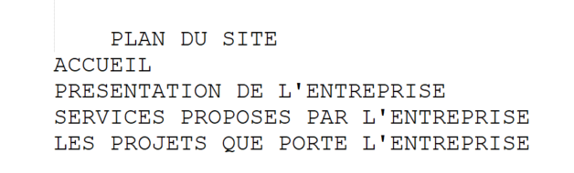

Bienvenue
Bonjour et bienvenue cher internaute, content de t'avoir sur ma page aujourd'hui. Ici te sera presenté, l'entreprise MadiTech Solution, une entreprise grandissante et qui est trés vite devenue un incontournable dans la Tech. Et pour que tu sache comment le site est structuré, voici le plan du site :
Remarques et conseils
Il est trés important de noté que ce qui sera dit et vue sur ce site n'est pas à prendre au pied de la lettre. En effet Tout ce qui est presenté ici est fictif et est le resultat d'un jeune homme avec visiblement beaucoup d'imagination(trop debordante). Ce site est un espace d'expression libre où j'ai laissé mon imagination s'exprimer.
Qui suis-je
Madi Kemel DINGA, est un etudiant qui vient de rejoindre la licence 2 informatique à l'université de CERGY. Il espere un jour créer sa propre entreprise dans le monde de la tech, il aime lire, courir bien que recement il ne sort plus courir comme avant(peut-etre à cause de la metéo). Il aime aussi la cuisine, recement il a appris à faire des gateaux.
Si vous voulez me joindre
Dans le cas vous aurez été epoustouflé par ce travail de maitre ou encore dans le cas plus probable où vous voudriez me contacter pour me dire combien mon site est moche. Je mets à disposition mon adresse mail ici, n'hesités pas à m'ecrire pour me felicité ou juste vous moquer(100% de chance). Mon mail : dingamadi@gmail.com